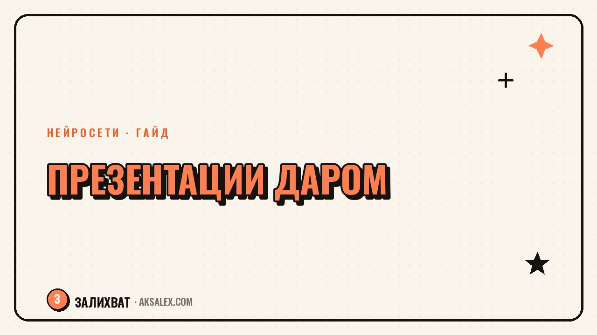

Бесплатные нейросети для презентаций на русском

Дедлайн через два часа, а презентация до сих пор пустой файл с логотипом. Знакомая ситуация для студента перед защитой, менеджера перед планёркой и репетитора перед родительским собранием. Бесплатные нейросети для презентаций на русском языке в 2026 году умеют собрать структуру, текст и дизайн слайдов за считанные минуты - вопрос только в том, какой сервис не подведёт с русскими буквами и не потребует карту уже на третьем слайде.
Зачем вообще нейросеть, если есть готовый шаблон
Шаблон в PowerPoint экономит время на дизайне, но не решает главную проблему - структуру. Человек, который делает презентацию раз в квартал, тратит основное время не на цвет фона, а на то, что писать на втором слайде и как не повторить одно и то же трижды разными словами. Нейросеть берёт на себя именно эту часть: из короткого описания темы она строит логику подачи - вступление, проблема, решение, аргументы, вывод.
Второй плюс - скорость сборки визуала. Даже если потом ты сам поправишь половину текста, готовый каркас с иконками, разбивкой на блоки и единым шрифтом экономит час-полтора по сравнению с ручной вёрсткой в редакторе слайдов. Для разовой задачи вроде отчёта на работе или доклада в вузе этого достаточно, чтобы не тратить вечер.
Нейросеть для презентаций - это не дизайнер, а быстрый черновик. Она закрывает 70% рутины, а финальную вычитку и адаптацию под свою тему всё равно делаешь сам.
Какие сервисы реально работают с русским языком
Часть популярных нейросетей для презентаций заточена под английский, и русский текст в них либо ломает вёрстку, либо превращается в набор с рандомными переносами. Ниже сервисы, которые на практике корректно держат кириллицу и дают бесплатный вход без оплаты сразу.
Gamma
Одна из самых известных нейросетей для быстрой сборки презентаций, сайтов и документов. Понимает русские промпты, сама разбивает текст на слайды и предлагает несколько вариантов дизайна. Бесплатный тариф даёт ограниченное число кредитов в месяц - для одной-двух презентаций хватает, для регулярной работы уже тесно.
Canva (Magic Design)
Canva встроила генерацию презентаций по текстовому описанию в свой бесплатный редактор. Результат более шаблонный, чем у Gamma, зато у Canva огромная библиотека готовых элементов, которые можно докрутить руками - иконки, фото, диаграммы. Хороший вариант, если презентация уже есть, но нужно быстро причесать визуал.
Plus AI и Beautiful.ai
Работают как надстройка над Google Slides и PowerPoint соответственно. Удобно тем, кто и так делает слайды в привычном редакторе и не хочет переучиваться на новый интерфейс. Бесплатный доступ обычно ограничен пробным периодом или числом слайдов в месяц, но для разовой задачи этого достаточно.
Пошагово: от идеи до готового файла за 20 минут
Разница между презентацией, которую стыдно показать, и приличным результатом чаще всего не в выборе сервиса, а в качестве запроса. Вот рабочая последовательность действий.
- Сформулируй тему одним предложением и добавь цель: 'презентация для отчёта перед руководителем', 'доклад для однокурсников', 'презентация для родителей на собрании'
- Укажи количество слайдов - без этого сервис может выдать и 6, и 25 слайдов
- Перечисли ключевые пункты, которые обязательно должны попасть в структуру, если они у тебя уже есть
- Сгенерируй первый вариант и посмотри структуру, а не дизайн - на этом этапе важна логика подачи
- Попроси сервис переделать конкретные слайды, если структура хромает, вместо того чтобы перегенерировать всё заново
- Замени общие фразы на свои цифры и примеры - нейросеть не знает деталей твоего проекта
- Проверь русский текст на кальки и странные обороты, характерные для машинного текста
- Выгрузи в PDF или PPTX и открой на другом устройстве - иногда шрифты и отступы едут при экспорте
Отдельно стоит проверить титульный слайд и слайд с выводами - именно их запоминают лучше всего, а нейросети часто делают их слишком общими. Перепиши заголовок конкретнее и добавь один факт или цифру, которые относятся именно к твоей теме.
Где заканчивается бесплатный тариф
Бесплатные нейросети для презентаций не благотворительность, а маркетинговая воронка, поэтому лимиты продуманы так, чтобы разовая задача решалась, а регулярная упиралась в оплату. Типичные ограничения: число генераций или кредитов в месяц, водяной знак на экспорте, урезанный набор шаблонов и запрет на экспорт в редактируемый формат.
Как растянуть бесплатный лимит
Планируй генерации заранее - если знаешь, что презентация нужна в пятницу, не трать кредиты на эксперименты в понедельник. Проверяй, есть ли у сервиса бесплатный тариф без привязки карты - часть площадок просит платёжные данные даже для 'бесплатного' плана и потом списывает деньги по истечении пробного периода, если не отменить подписку вручную.
Сравнение сервисов по ключевым параметрам
Чтобы не тестировать все сервисы подряд, вот сводная таблица по тому, что важно на практике: поддержка русского языка, лимит бесплатного тарифа и формат экспорта.
| Сервис | Русский язык | Бесплатный лимит | Экспорт без оплаты |
|---|---|---|---|
| Gamma | Да, корректно | Ограниченные кредиты в месяц | PDF, PPTX |
| Canva Magic Design | Да | Базовые шаблоны без ограничения по числу | PDF, PNG |
| Plus AI | Частично, нужна правка | Пробный период | Через Google Slides |
| Beautiful.ai | Частично, нужна правка | Ограниченное число слайдов | PDF с водяным знаком |
Частые ошибки при работе с бесплатной нейросетью
Самая распространённая ошибка - сдавать презентацию без проверки текста. Нейросеть может уверенно написать неточную формулировку или вставить общий факт, который не относится к теме. Вторая ошибка - слишком длинный промпт с десятком требований сразу: сервис путается и выдаёт компромиссный вариант, который никого не устраивает.
Третья ошибка - игнорировать структуру ради красивой картинки. Красивый слайд с нечитаемым текстом на пёстром фоне хуже скромного, но понятного оформления. Если сомневаешься в выборе шаблона, бери светлый фон с одним акцентным цветом - такие слайды одинаково хорошо смотрятся и с проектора, и на экране ноутбука.
Частые вопросы
Какая нейросеть для презентаций бесплатная и на русском без ограничений?
Полностью безлимитных бесплатных сервисов нет - у всех есть лимит по кредитам, слайдам или водяному знаку. Ближе всего к безлимиту базовый шаблон Canva Magic Design, но для сложных структур всё равно удобнее Gamma.
Можно ли сделать презентацию нейросетью без регистрации?
У большинства сервисов вход обязателен, хотя бы через почту или аккаунт Google. Без регистрации доступны только упрощённые генераторы отдельных слайдов, а не полноценных презентаций.
Нужно ли платить, если презентация нужна один раз?
Нет, для разовой задачи достаточно бесплатного тарифа Gamma или Canva. Плати только если презентации нужны регулярно и лимита кредитов не хватает.
Почему нейросеть пишет странный русский текст в презентации?
Часть сервисов изначально обучена на английском и переводит структуру дословно. Помогает переписать промпт короче и конкретнее, а готовый текст вычитать самому перед сдачей.
Какая нейросеть лучше для студенческого доклада?
Для доклада с чёткой структурой (введение, основная часть, выводы) удобнее Gamma - она хорошо держит логику длинного текста. Для презентации с акцентом на визуал лучше подойдёт Canva.
Раз тема оказалась полезной, вот что почитать следующим. Пинтерест не соцсеть в привычном смысле, а визуальный поисковик. Разбираем, с чего начать блог там и как не слить первые недели впустую.
Читать статью →а не вручную